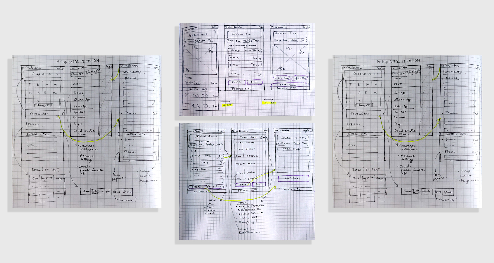
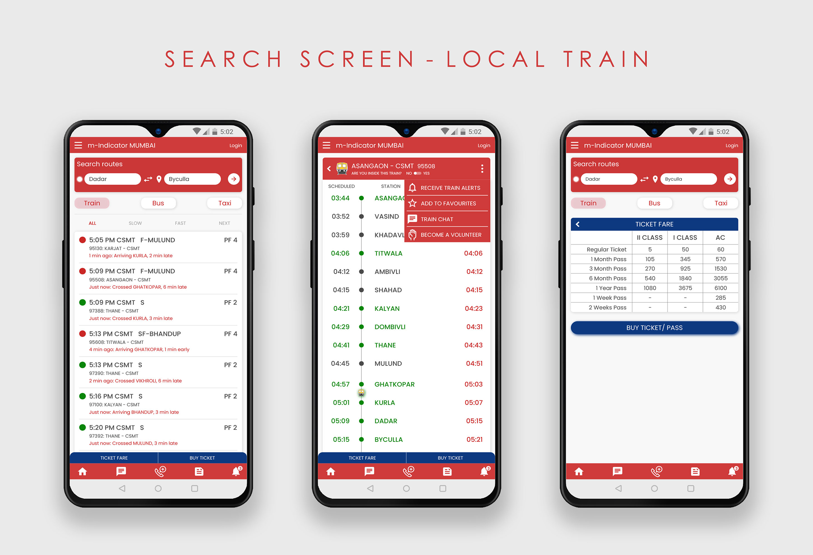
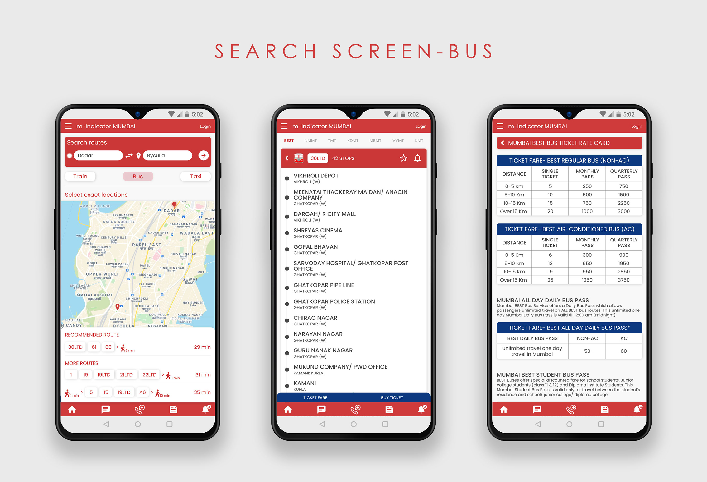
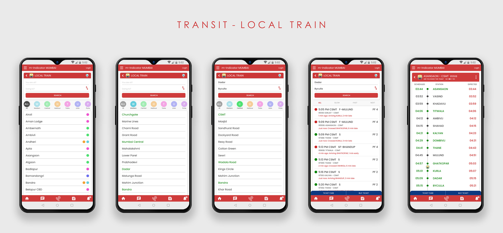
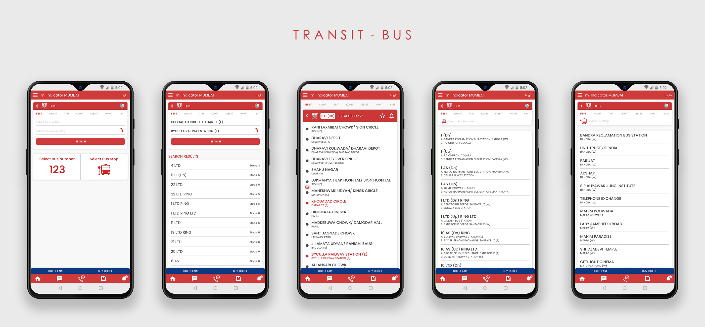
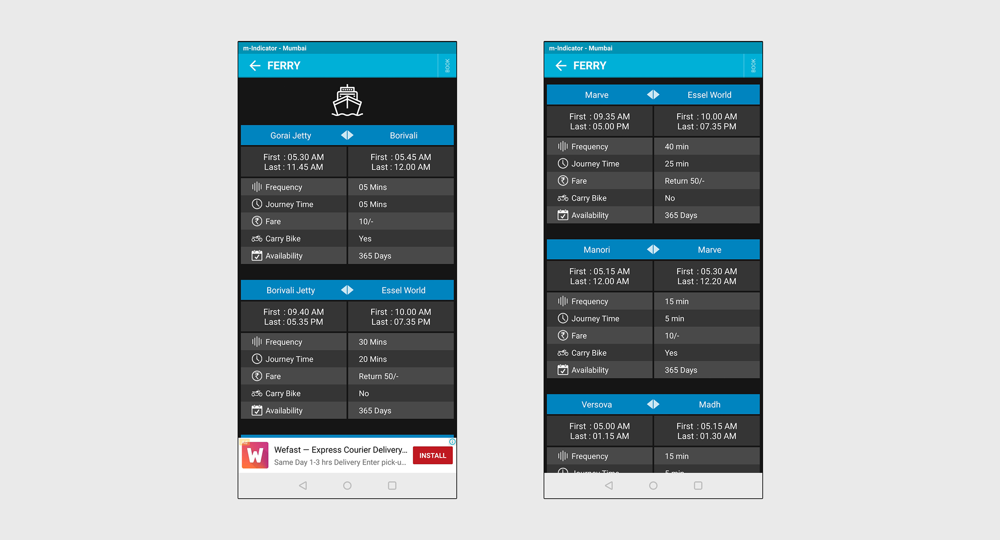
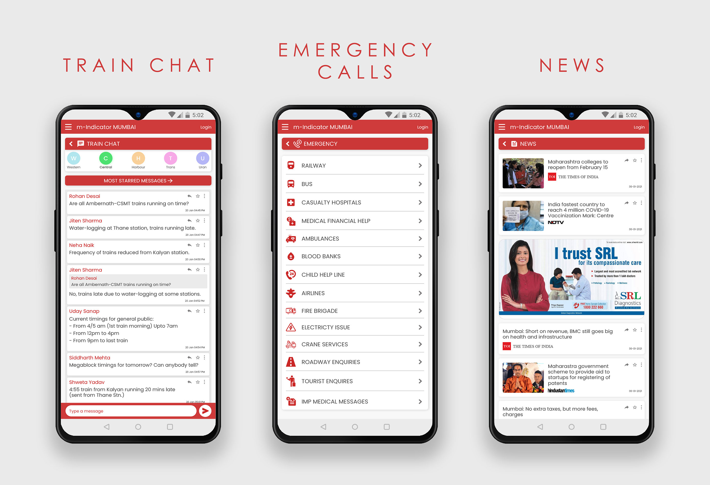

CASE STUDY: M-INDICATOR MOBILE APP REDESIGN

OVERVIEW
M-indicator is one of the most used commute applications in India, mainly in the city of Mumbai. It helps users in finding information about public transport in Mumbai. It provides a host of useful features and information like
- Local train stations, schedules, platforms, door positions, live chat for exchanging important information like train delay, cancellation, platform change, etc.
- BEST bus numbers, bus stops, routes, timings
- Schedules and details for Metro, Monorail, Ferry, Indian railways, MSRTC
Along with commute information, M-indicator also provides other features like women's safety, a long list of emergency numbers, nearest police station locator, job and property listings, and city information including nearby popular places, hotels, restaurants, etc.
UNDERSTANDING USERS
Although this app provides a lot of valuable information and is widely used, there are a number of problems with
its navigation design and user interface. I have personally used this app in two completely different scenarios-
a) having newly moved to Mumbai with no clue about the functioning of local trains and BEST buses, and
b) having all knowledge about the public transport system in the city and using the app for commute daily,
and in both the scenarios I have experienced different types of problems.
Apart from having my personal experience, I read many app reviews on the play store, to identify the app’s problem areas.
Reading the positive reviews helped me understand what the users loved about the app, and identify the most used features.
The negative reviews gave an insight into what the users hated about the app and what were the critical
problems faced by the users.
I also conducted user interviews of around 13 people by asking them questions like:
- Do you use public transport? If yes, how often?
- Have you used the M-indicator app? How often?
- What do you like the most about the app?
- Do you think the current app design has any problems?
- If yes, what are the problems you face with the app?
- Would you want any new features to be added to the app? If yes, what features would you suggest?
Based on this, I created user personas to give a narrative to these user interviews and reviews. This helped me in better understanding the type of users the app caters to, and to identify pain points easily.
{kind=link}
{kind=link}
{kind=link}
{kind=link}
IDENTIFYING PAIN POINTS
Based on the user interviews, reviews, and personas, I identified and listed the user's pain points.
- Cluttered look of the app, disorganised features
- Hard to read and understand the current UI, visual inconsistency
- People can only use this app when they know which specific route and mode of transport, they have to take to reach their final destination. This makes them constantly switch between Google maps and M-indicator which is inconvenient
- No provision of buying a ticket on the app itself: inconvenient for users leading busy lifestyles and having no time to stand in the long queues at the station
- For frequent users, no provision to save their usual routes to quickly check the schedule of their usual trains. It requires a lot of steps and a long process to do the same action every day.
- Language barrier: Even though Hindi and Marathi languages have been introduced in the app, it’s yet to be introduced to the train alerts and news sections.
USER FLOW
Based on the user interviews and the personas, I created few most common user journey maps focusing on the path users would take to perform certain actions on the app. This ultimately helped in mapping out the number of steps required to perform the most common tasks.
{kind=link}
DESIGN SOLUTIONS- WIREFRAMES
After exploring all the insights from the exploration phase, I started re-designing the app. For this, the main tools used were paper sketches.
Wireframe sketches (Click on image to enlarge & zoom)

{kind=link}
USER TESTING FEEDBACK AND LEARNING
- Most users got confused when a changed set of icons were used for the "Transit" section on the home screen. Since it's one of the most used sections, I then decided to keep the same icons as the existing icon set to avoid confusion.
- The size of the back arrow button was small for most users and hence ergonomically difficult to press. I then made the button bigger and tested it to make sure it was convenient for all users.
- Most users didn't like to scroll much on the home screen to reach all the content of the "Explore" and "Other" sections. I then introduced an icon set for the "Explore" section, similar to the "Transit" section.
- The bottom navigation bar for important features like the train chat, train alerts, emergency calls, and news, received a lot of positive reviews from users.
VISUAL DESIGN
Objectives:- Clean and minimalistic design with abundant white space to balance the large amount of information on the screen.
- To develop consistency in design across all screens throughout the app.
I made sure that the colour palette shouldn't be too different from the app's original colours. Hence, I decided to maintain the red and blue colours from the M-indicator logo, and just changed the black screen to a white to make the design more appealing and easy to read.
Typography:
The idea was to use a sans-serif font so the amount of information on the screen is easily legible. The font also had to be one that supports different regional scripts, hence I decided to go with the geometric sans-serif font- Poppins.
{kind=link}
HI-FIDELITY PROTOTYPES
Homescreen and Menu
- Added a new search bar for users to explore all the possible options to reach their destination. This feature also helps users who don't know nearby stations or names of bus stops or specific bus numbers.
- Introduced the Favourites feature where users can either save their usual routes or just save a specific train or a bus stop/ bus number.
- Used the existing icons for the "Transit" section to avoid confusion in users.
- Introduced an icon set for the "Explore" section, similar to the "Transit" section.
- In the current design of the app, important features like the "Train Chat" and "Emergency calls" are mixed up with other features. I incorporated a bottom navbar to make these features easily accessible from any screen.
- Added a Settings tab that allows users to choose a language, chat font size, etc.
- Removed advertisements from the home screen and shifted them to the News section.
Hi-Fidelity Mockup- Existing current app Homescreen and Menu (Click on image to enlarge & zoom)

Hi-Fidelity Mockup-Homescreen and Menu (Click on image to enlarge & zoom)

<
Search Screens
- The search feature allows users to enter their current location and destination to get different travel options.
- The search screen- Local train/ metro/ monorail shows the upcoming trains at nearby stations and their schedule and fare details.
- The search screen- Bus gives a map view to select your exact current location and destination. It then suggests the bus numbers and route you have to take according to these set locations. It further allows users to select any of the suggested bus numbers to check details like the number of stops, bus fare, etc.
- The search screen- Taxi gives a map view to select your exact current location and destination. According to the distance, it provides information on the rate of AC and non-AC taxis and also gives links to open the Uber or Ola apps to book a taxi.
Hi-Fidelity Mockups- Search Screen- Local Train (Click on image to enlarge & zoom)

{kind=link}
Hi-Fidelity Mockups- Search Screen- Bus (Click on image to enlarge & zoom)

{kind=link}
Hi-Fidelity Mockups- Search Screen- Taxi (Click on image to enlarge & zoom)

Transit Screens
- Local Train- Introduced a colour coding system to distinguish between the different train lines. Included the Location to Destination search feature on the same page as the station names, since most users overlooked that feature in the current design of the app. After selecting a train, users now have an option to add to favourites, or receive alerts for that train. Added the "Ticket Fare" and "Buy Ticket" at the bottom for users to conveniently book tickets online instead of standing in queues.
- Bus- Option to switch to map introduced to help people pinpoint their exact location and destination. Added the "Ticket Fare" and "Buy Ticket" at the bottom for users to conveniently book tickets online.
- Monorail, Metro- Included the Location to Destination search feature on the same page as the station names. Option to switch to map added in both sections. Added the "Ticket Fare" and "Buy Ticket" at the bottom for users to conveniently book tickets online instead of standing in queues.
- Ferry- In the current design, the Ferry section has no search feature. Users also have to keep scrolling to see all the available ferries in the list. Hence, I modified the section to add a search feature and, moved the details of the ferries so that they're visible only after a user clicks on a ferry to know more. this helps keep the list short on the main page and users don't have to keep scrolling to find what they're looking for.
- Removed advertisements from the home screen and shifted them to the News section.
Hi-Fidelity Mockup- Existing Transit- Local train section (Click on image to enlarge & zoom)
{kind=link}
Hi-Fidelity Mockups- Transit Screen- Local Train (Click on image to enlarge & zoom)

{kind=link}
Hi-Fidelity Mockup- Existing Transit- Bus section (Click on image to enlarge & zoom)
{kind=link}
Hi-Fidelity Mockups- Transit Screen- Bus (Click on image to enlarge & zoom)

{kind=link}
Hi-Fidelity Mockup- Existing Transit- Monorail section (Click on image to enlarge & zoom)
{kind=link}
Hi-Fidelity Mockups- Transit Screen- Monorail (Click on image to enlarge & zoom)

Hi-Fidelity Mockup- Existing Transit- Metro section (Click on image to enlarge & zoom)
{kind=link}
Hi-Fidelity Mockups- Transit Screen- Metro (Click on image to enlarge & zoom)
{kind=link}
Hi-Fidelity Mockup- Existing Transit- Ferry section (Click on image to enlarge & zoom)

{kind=link}
Hi-Fidelity Mockups- Transit Screen- Ferry (Click on image to enlarge & zoom)
{kind=link}
Other Screens- Train Chat, Emergency Calls, News
- Train Chat- Added navigation on top to switch between different train line chats. Added a button for users to access the most starred/ important messages.
- Emergency calls- Introduced a new consistent icon set for this section.
- News- Made the individual news boxes smaller to fit only the headlines. This allows news articles to be viewed on the screen. Retained the ads in this section since completely removing advertisements from the app will cause revenue loss.
Hi-Fidelity Mockup- Existing Transit- Train Chat, Emergency calls, News (Click on image to enlarge & zoom)
{kind=link}
Hi-Fidelity Mockups- Train Chat, Emergency calls, News (Click on image to enlarge & zoom)

{kind=link}
Adobe XD Prototype video
TAKEAWAYS
Analysing an app that I have been using for years, from a design perspective, identifying the problems and, coming up with solutions to improve its user experience was a very satisfying and enriching experience.
- Throughout this project, my research led me to a lot of reading about the importance of ergonomics
in UX design. I learned many new principles and gained valuable knowledge that I can apply in my future work.
- One challenging part of this case study was to design in a way so that the user is not overwhelmed with such a large amount
of information that the app offers. The most significant changes I made for this are:
I changed the existing sliding menu display, introduced white space which helps balance the the design elements on the screen compared to the current black screen design, and I re-organized the content in a structured and simple way.